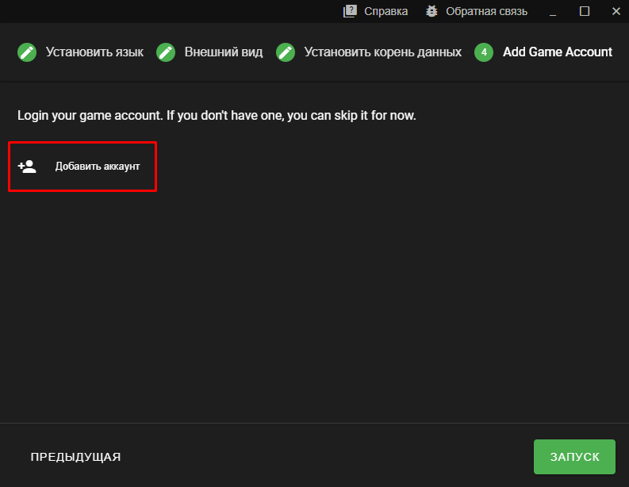
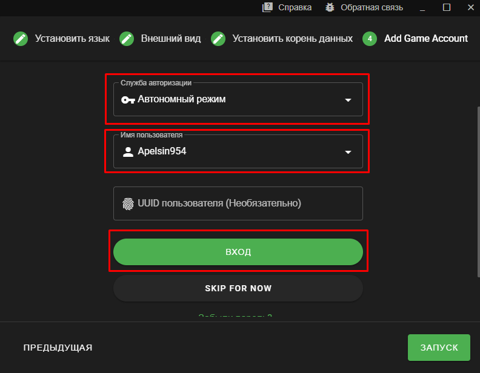
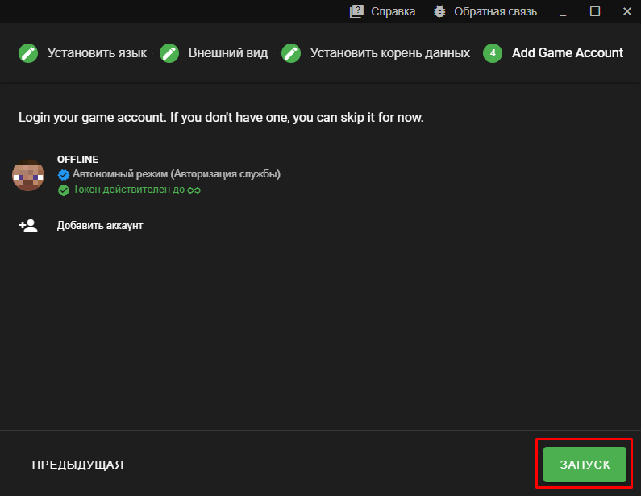
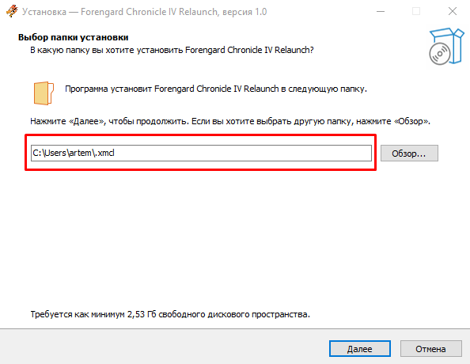
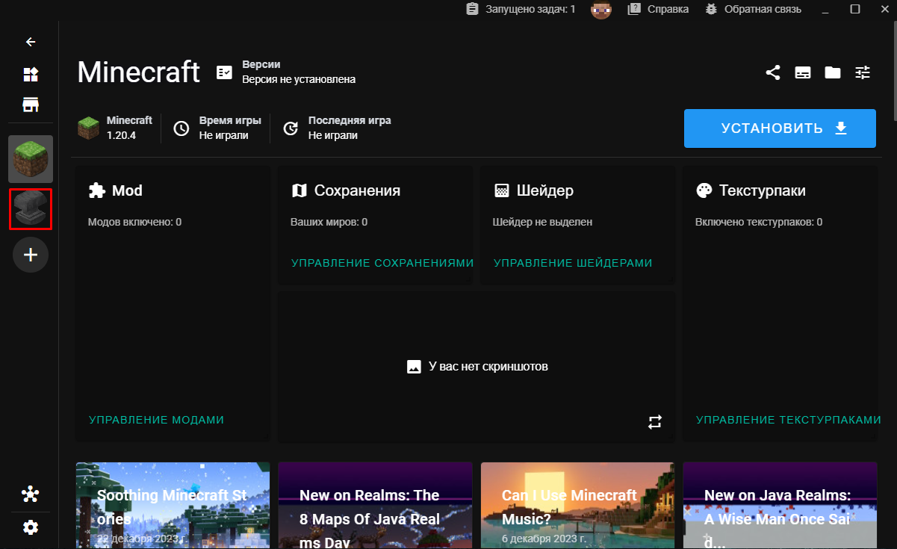
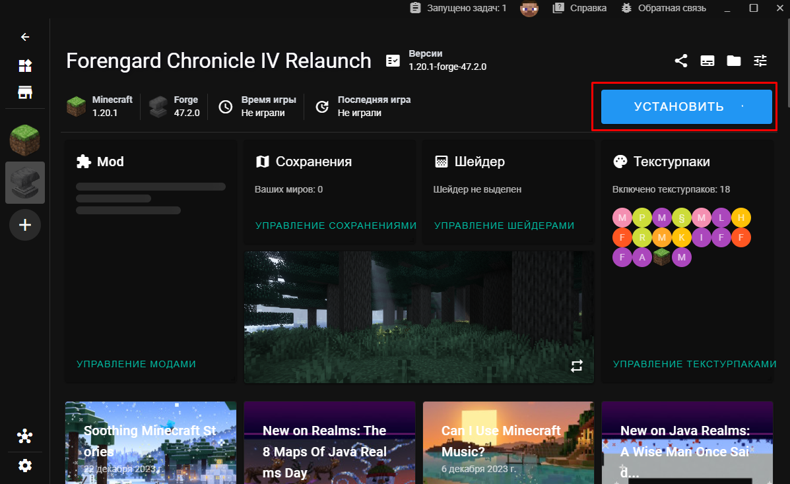
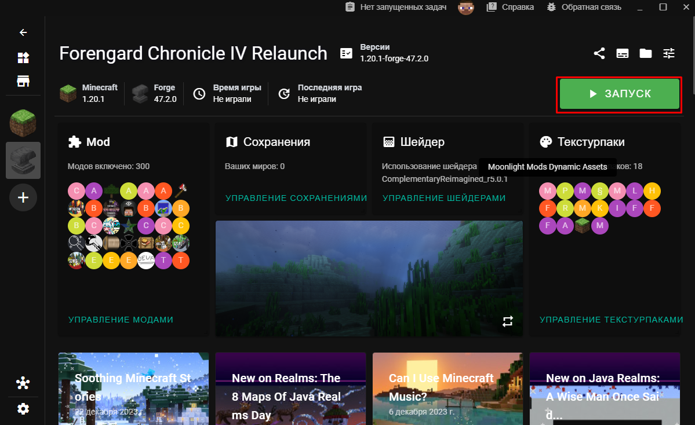
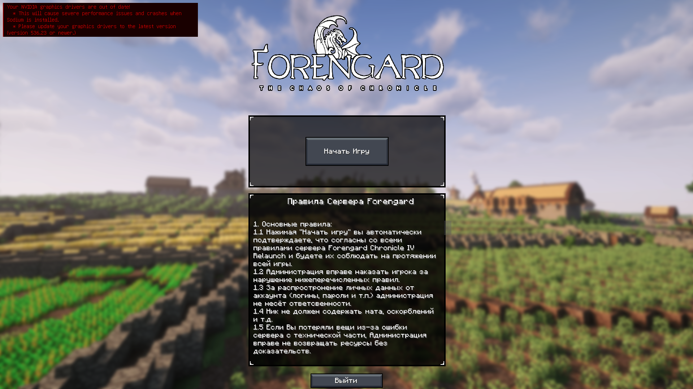

Шаг 1: Вам необходимо скачать и установить X Launcher Minecraft
Другие лаунчеры работают со сборкой криво. Проверено!
Шаг 2: Распакуйте содержимое архива в любое удобное место
Желательно, чтобы в пути распаковки не было кириллицы
Шаг 3: Запустите X Minecraft Launcher.exe и настройте его
В настройке лаунчера ничего сложного нету, всё ставим по стандарту.
Единственное, надо запомнить путь вашей папки с файлами
(здесь будет сборка, все моды и тому подобное)
На последнем этапе вам нужно добавить аккаунт, чтобы зайти на сервер и играть не под ником Steve
Здесь необходимо выбрать АВТОНОМНЫЙ РЕЖИМ или Ely.by (если есть аккаунт), далее вводим ник и входим!
Если всё верно, жмём запуск!
Шаг 4: Установка сборки
Сперва нужно скачать установщик нашей сборки
Распакуйте все файлы, а затем откройте установщик и выбирите тот путь, который вы указали ранее в лаунчере на 3-м этапе.
Теперь осталось только ждать, обычно установка занимает от 2 до 5 минут.
Шаг 5: Запуск сборки
Перезапустите лаунчер майнкрафт и вы увидите новую сборку!
Если вы всё сделали правильно конечно...
Переходим туда и нажимаем "УСТАНОВИТЬ"
Лаунчер сам докачает Java, если её нету и по мере необходимости добавить недостающие файлы.
После долгого ожидания появится заветная кнопка "Запуск". Жмём!
Осталось только ждать пока запуститься сборка!
Поздравляем! Вы великолепны!
